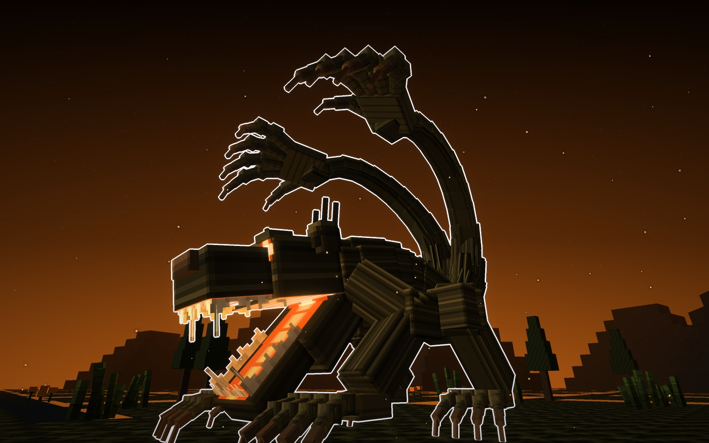
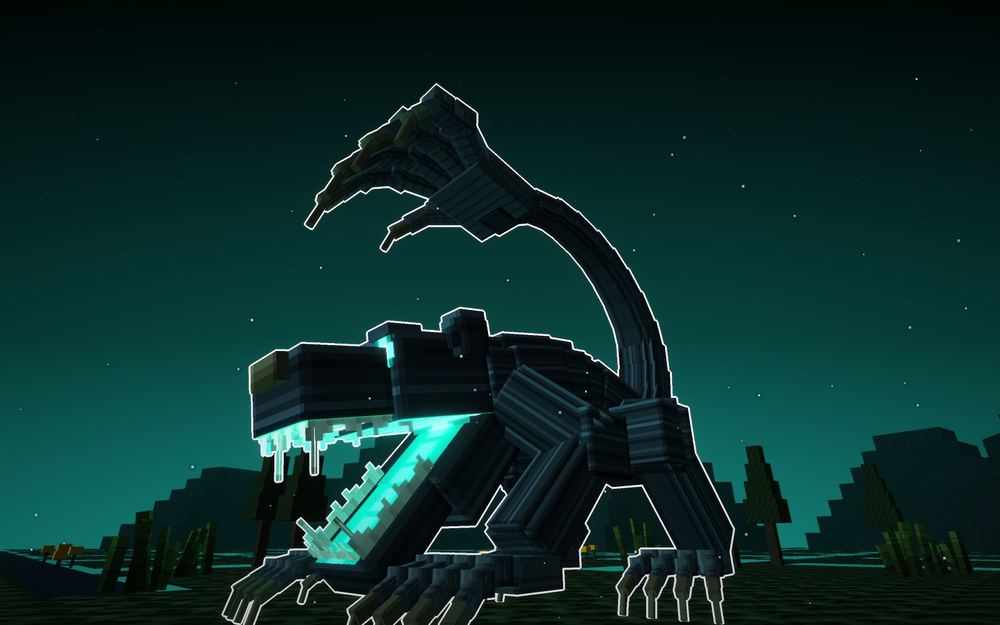
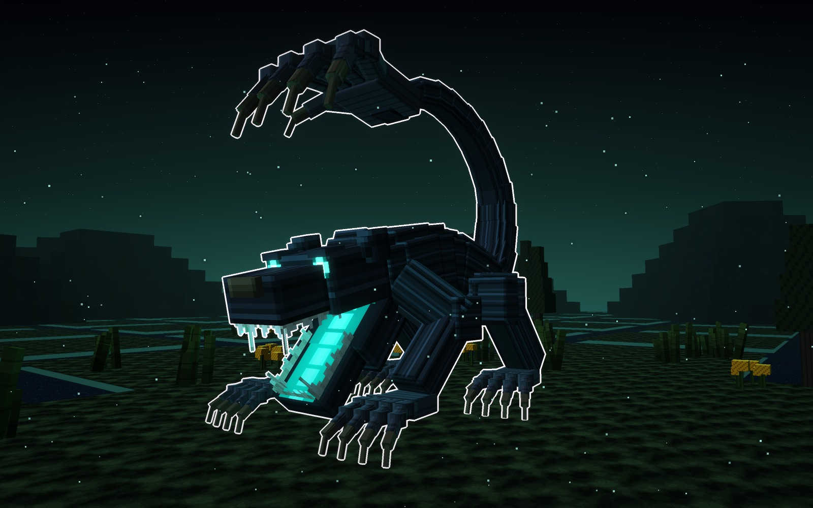
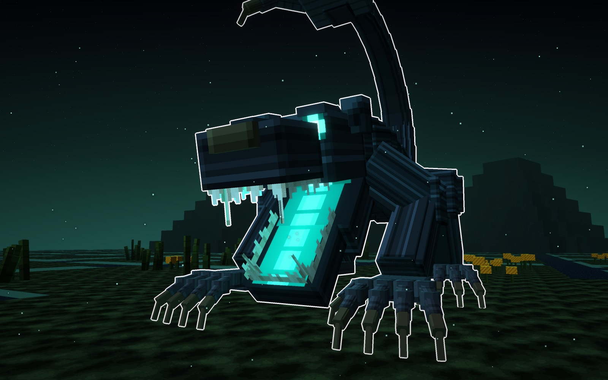
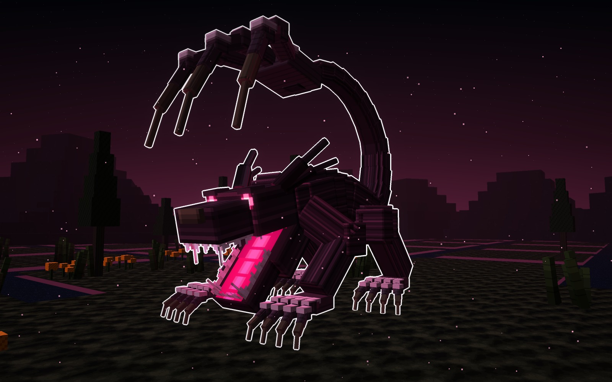
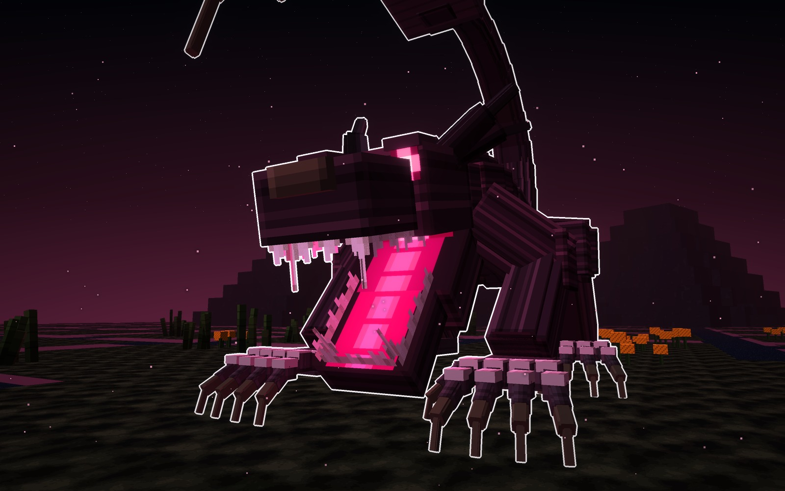
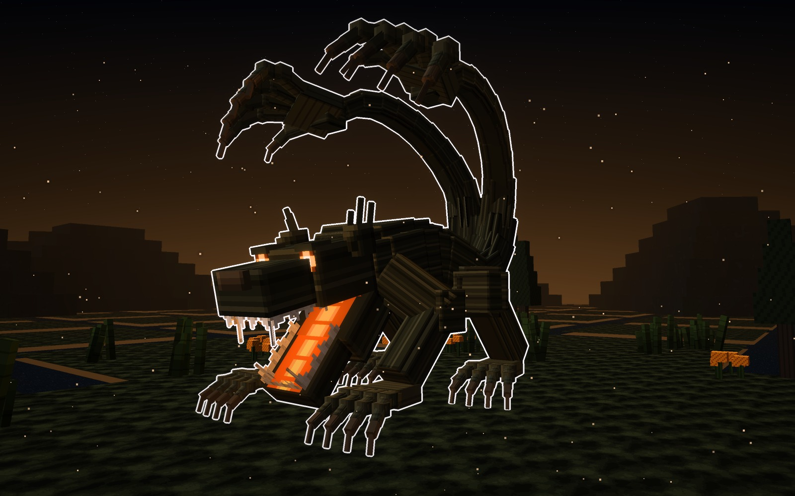
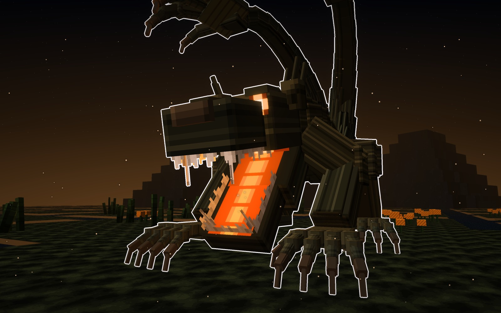
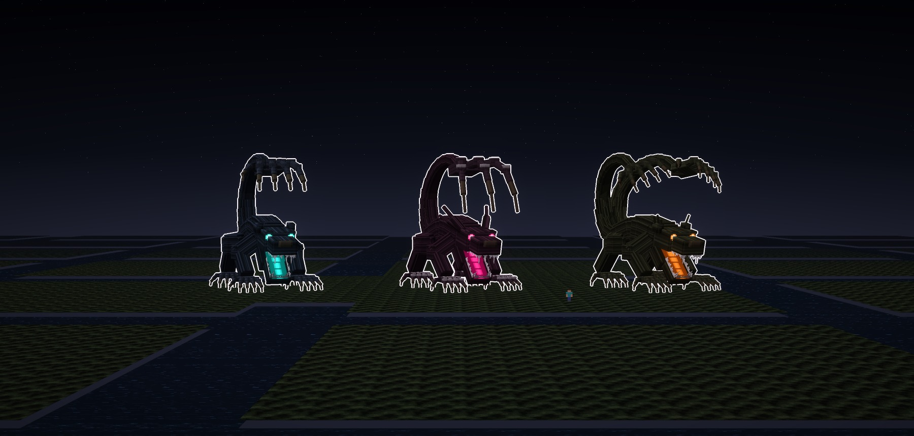
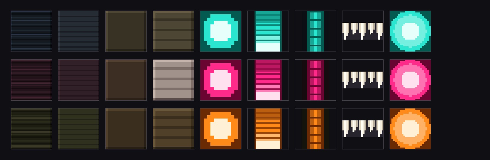

Ahuizara, la Mano del Agua: sale del ahuizotl de los aztecas, la bestia de los canales que ahogaba a la gente. Es una bestia larga y flaca, agazapada para saltar, que anda sobre cuatro manos y lleva la cola arqueada sobre el lomo, con una mano enorme abierta encima de la cabeza. Tiene tres tipos: la Mano, la Garra y la Gemela.
Los tres tipos son el mismo jefe y tienen la misma pose: agazapada, con la cola-mano en alto. Cambian la mano de la cola, las orejas y el color.
Vive en las chinampas de noche, con los canales de agua negra entre las parcelas, matas de cempasúchil, juncos, ahuejotes y los volcanes al fondo. Las fotos van sin letras y con el borde blanco, y cada tipo tiene su cartel.
Los tres comparten la cabeza, el cuerpo, las cuatro manos y la pose. Cambia la mano de la cola, y con ella la silueta, además de las orejas y el color.
Una mano de cinco dedos abierta sobre la cabeza, con el pulgar a un lado. Las orejas son pequeñas y redondas. El pelo es negro azulado y la luz, verde agua.



Una mano de tres dedos largos de garra, sin pulgar, con las garras más largas. Todas sus manos llevan placas de hueso en los nudillos. Las orejas son largas y echadas atrás. El pelo es ciruela oscuro y la luz, rosa mexicano.


Dos colas, que se abren a los lados, con una mano a cada lado de la cabeza: la enmarcan como dos coronas de dedos. Las orejas llevan penachos de pelos de punta. El pelo es verde oliva oscuro y la luz, naranja de cempasúchil.


Los tres juntos, con la misma luz y un jugador delante (1,8 bloques).

Las texturas de cada tipo a píxel grande, sin letras. Hay una fila por tipo y, de izquierda a derecha, van: el pelo mojado, la palma, la garra, el hueso de los nudillos (solo lo lleva la Garra), el ojo, el paladar, el suelo de la boca, los dientes y el núcleo.

15-10-2026. Juan la aprobó a la primera, con los tres tipos en la misma pose: «guárdalo y sigamos con otro boss y sus 3 tipos».
Bocetos: materiales/generadores/ahuizara_modelo.py y ahuizara_escenas.py (y kelpia_modelo.py y jefa_modelo.py, de los que toma los pintores comunes y los tubos de bloques).